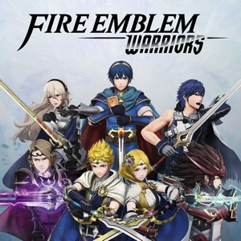

Anterior
Próximo
Thracia 776 - The Beginning

Fire Emblem (ファイアーエムブレム, Faia Emuburemu) é uma série de jogos eletrônicos de RPG e estratégia, criado originalmente por Shouzou Kaga, na Intelligent Systems, e publicado pela Nintendo. Atualmente a franquia é composta por dezessete jogos e três spin-offs.
O título da franquia refere-se à um elemento no jogo, geralmente retratado como uma arma ou escudo, representando o poder da guerra e dos dragões. O desenvolvimento do primeiro jogo começou como um projeto dõjin de Shouzou Kaga e de outros três desenvolvedores. A ideia de Kaga, era desenvolver um jogo onde o jogador se importasse com cada personagem, dessa forma, as mortes que ocorrem no jogo são permanentes, com exceção dos títulos mais recentes que possibilitam a escolha entre o modo clássico e casual. O sucesso do primeiro jogo levou ao desenvolvimento de outros jogos da franquia. Kaga liderou o desenvolvimento de cada título até o lançamento de Thracia 776, quando deixou a Intelligent Systems e fundou seu próprio estúdio de jogos para desenvolver o título Tear Ring Saga.
Nenhum jogo da série tinha sido lançado fora do Japão até que em 2001 dois personagens da franquia, Marth e Roy, foram incluídos como personagens jogáveis em Super Smash Bros. Melee. Sua popularidade, bem como o sucesso internacional de Advanced Wars, convenceu a Nintendo a lançar os jogos posteriores no Ocidente, começando com o sétimo jogo The Blazing Blade sob o título Fire Emblem no ano de 2003 para Game Boy Advance. Os jogos tiveram vendas baixas e quase resultaram em um cancelamento da série até o lançamento de Fire Emblem Awakening que teve um sucesso comercial notório. A série como um todo tem sido elogiada por sua jogabilidade, e é frequentemente citada como a série de RPG tático, devido a vários elementos de jogabilidade que viriam a definir o gênero. Personagens de vários jogos também foram incluídos em crossovers com outras franquias de videogames, incluindo a já mencionada série Super Smash Bros.
Fire Emblem é uma série de jogos de estratégia por turnos nos quais o jogador controla seus personagens por um mapa com o objetivo de derrotar os inimigos para cumprir com a missão do capítulo, geralmente sendo tomar um castelo, sobreviver ao ataque inimigo, acabar com todos os inimigos do mapa ou derrotar um chefe. A saga também contém aspectos de RPG tradicionais; assim sendo, o jogador pode usar seu dinheiro para comprar armas e itens das lojas, visitar casas e cidades, conversar com NPC (Personagem Não-Jogável) ou antagonistas, para assim recrutar ou obter algum item, também é possível trocar objetos entre personagens e por fim adquirir pontos de experiência em cada luta para aumentar o nível e as características de cada unidade. O sistema de combate está baseado no triângulo de armas no qual cada tipo de arma tem vantagem sobre umas e desvantagem frente a outras, método baseado no jogo de pedra-papel-tesoura. Desde Fire Emblem: Genealogy of the Holy War, o triangulo de armas é o seguinte: a espada derrota o machado, este derrota a lança, que por sua vez derrota a espada. Estas armas só podem usar-se para atacar unidades adjacentes. Mesmo que há algumas armas especiais, como os hand axes (machados de mão) ou javelins (lanças) que podem mirar em unidades mais distantes. O arco não se ajusta a este triângulo, este arma produz um dano mortal às unidades voadoras, mas em compensação, o arqueiro é muito vulnerável aos ataques diretos. O arco só pode ser usado para atacar a distância, não é válido para atacar a inimigos próximos. A saga Fire Emblem também se caracteriza pelo uso da magia. Com os feitiços ocorre algo similar às armas: existe o triângulo de magia, que às vezes varia de um jogo a outro. Este triângulo de magia para alguns jogos é: feitiços de Luz vencem os Escuridão, os Escuros vencem os elementais, e os elementais que vencem aos de Luz. Em outros jogos como o seisen: Fogo vence Vento, Vento vence Trovão e este vence Fogo, no caso do Genealogy of the Holy War e Thracia 776, luz vence escuridão e elementais, e a magia de escuridão vence os elementais. Os feitiços podem alcançar unidades a distância e a inimigos próximos indistintamente. Os cajados são capazes de curar e executar magias especiais, além de que não se relacionam ao triangulo de magias. As armas e feitiços em Fire Emblem têm um número determinado de usos, depois dos quais, o arma ou feitiço se rompe e desaparece. Existem alguns jogos da saga que não seguem esta regra, e seus usos podem ser infinitos. De todas as formas, isto é algo evitável, já que em alguns jogos o jogador tem a opção de reparar qualquer arma em troca de certa quantia de dinheiro. Isto não é necessário para as armas típicas, pois podem encontrar-se em abundância no campo de batalha nos corpos dos inimigos abatidos, mas é muito útil para armas especiais, das que só existe um exemplar e não é possível obter mais no jogo. Também podem trocar-se as armas velhas por novas no ferreiro local. As armas podem ser de ferro, aço e prata, algumas chegando à ter algum tipo de feitiço. Quanto maior seja a qualidade da arma, mais pontos de vida arrancará do inimigo, porém menor vida útil.
Em jogos como Advance Wars e outros jogos de táticas RPG como são Final Fantasy Tactics, o gerador de personagens não existe. No seu lugar dentro de Fire Emblem se utilizam diferentes classes e personagens, cada uma pertencente a diferentes habilidades classes de personagens tendo estes passado e personalidade. O tamanho das estatísticas do personagem ao início é pequeno no início de cada partida, mas quando se progride durante o jogo este avança nas suas habilidades, outras unidades também podem unir-se à causa do personagem principal se é necessário através dos eventos da trama e as ações que se tomem. Usando as unidades nas batalhas, elas obterão pontos de experiência, com 100 pontos, o personagem subirá de nível. Quando o personagem adquire nível suficiente, eles podem mudar de classe que, dependendo das regras de cada jogo da franquia, as personagens podem ser promovidos pelo seu nível de experiência, ou através de um objeto em particular que forçasse a promoção da unidade.
Quando as unidades de Fire Emblem perdem todos os pontos de vida e morrem, não podem ser usadas no jogo novamente, o capítulo continuará de maneira normal. Esta regra também afeta aos NPCs e às unidades inimigas. Para evitar a baixa definitiva do personagem, a única opção do jogador é recomeçar o capítulo. Esta regra vai além quando trata-se de um personagem principal, já que se morre, a partida termina e o jogador é obrigado a reiniciar o capítulo. Existem várias exceções em jogos como Fire Emblem: Monsho no Nazo (Mystery of the Emblem→FE3), Fire Emblem: Seisen no Keifu (Genealogy of Holy War→FE4), Fire Emblem: Rekka no Ken (Blazing Sword, Fire Emblem 1 na Europa→FE7) e Fire Emblem: Path of Radiance, nos quais as personagens caídos podem voltar a usar-se em algum ponto do jogo.
Fire Emblem
Shadow Dragon
and the
Blade of Light
Fire Emblem
Gaiden
Fire Emblem
Mystery of the Emblem
Fire Emblem
Genealogy
of the
Holy War
Fire Emblem
Thracia 776
Fire Emblem
The Binding Blade
Fire Emblem
The Blazing Blade
Fire Emblem
The Sacred Stones
Fire Emblem
Path of Radiance
Fire Emblem
Radiant Dawn
Fire Emblem
Shadow Dragon
Fire Emblem
New Mystery of the Emblem

Fire Emblem
Awakening
Fire Emblem
Fates
Fire Emblem Echoes:
Shadows of Valentia
Fire Emblem
Three Houses

Fire Emblem
Engage
Tokyo Mirage Sessions ♯FE
Fire Emblem Heroes
Fire Emblem Warriors
